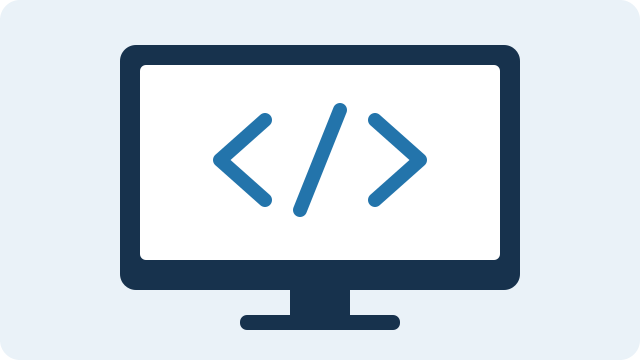

Tecnologia, prática e aprendizado
Meu portfólio de desenvolvimento.
Desenvolvedor back-end e estudante de tecnologia
Um espaço para apresentar meu perfil, compartilhar meus interesses e explorar como a tecnologia pode resolver problemas do dia a dia.
Conheça meus interesses
01 / Apresentação
Sobre mim e o projeto
Sou desenvolvedor back-end e estudante de tecnologia. Tenho interesse em entender como os sistemas funcionam e em criar soluções que ajudem as pessoas em suas atividades.
Este portfólio começou como minha primeira página da disciplina, criada com HTML5. Nesta segunda entrega, o CSS3 dá forma ao projeto com cores, tipografia, espaçamentos e um layout que se adapta a diferentes telas.
02 / O que me move
Meus interesses
Três áreas que fazem parte da minha jornada em tecnologia.
-
Desenvolvimento back-end
Entender a lógica por trás das aplicações e criar funcionalidades que conectam pessoas, serviços e informações.
Lógica e aplicações -
Bancos de dados
Aprender a organizar, armazenar e consultar dados para que a informação esteja disponível quando for necessária.
Dados e organização -
Fundamentos do desenvolvimento web
Explorar HTML e CSS para construir páginas bem estruturadas, acessíveis e agradáveis de usar em diferentes dispositivos.
Estrutura e estilo
03 / Continue aprendendo
Material de estudo
A documentação faz parte do aprendizado. Explore a MDN Web Docs em português para conhecer melhor o HTML, o CSS e outras tecnologias web.